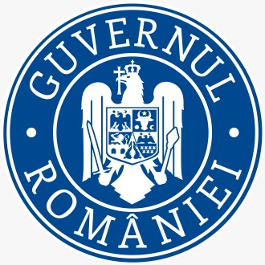
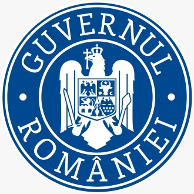

Obiectiv General

Obiectiv general
Investiția s-a realizat în intravilanul localității, strada reabilitată prin prezentul proiect face parte din domeniul public al Municipiului Câmpulung, Județul Argeș. Investiția respectă Planul Urbanistic General aprobat. Investiția a fost necesară, oportună și cu potențial economic. S-au efectuat lucrări de consolidare astfel: pe tronsonul Km 0+180,00 - Km 0+415,00 s-a amenajat o fundație adâncită de parapet, pe partea stângă, iar pe dreaptă între Km 0+150,00 - 0+350,00 s-a protejat taluzul cu plase romboidale, conform profilului transversal tip. Pentru scurgerea apelor s-au amenajat șanțuri din beton de ciment pentru a mări viteza de evacuare a apei și a proteja, totodată, structura rutieră față de infiltrațiile de apă laterale, mai ales ca proprietățile pământului din patul drumului (argilă) sunt extrem de sensibile la variații de umiditate. De asemenea au fost montate indicatoare rutiere și marcaje longitudinale. Prezenta reabilitare a avut ca scop îmbunătățirea infrastructurii tehnico-edilitare, crearea unui mediu sigur și salubru, propice stimulării imaginației, sociabilității, dezvoltării fizice și a abilităților de coordonare motrica a copiilor. Totodata acest spațiu poate funcționa și ca un loc de relaxare pentru adulții care îi însoțesc. Soluțiile utilizate în conformitate cu obiectivul de creștere a potențialului socio - comunitar în zonă, duc la îmbunătățirea condițiilor de viață și de socializare a locuitorilor din comunitațile care includ spațiile de joacă, cât și al vizitatorilor orașului. La nivelul municipiului Câmpulung au efect de revitalizare asupra mediului urban.